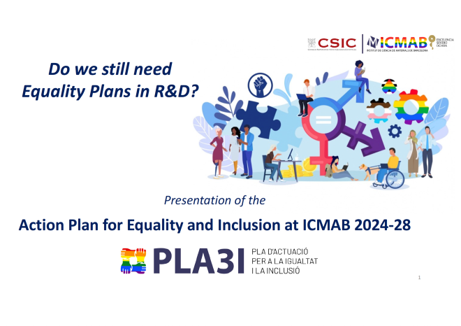
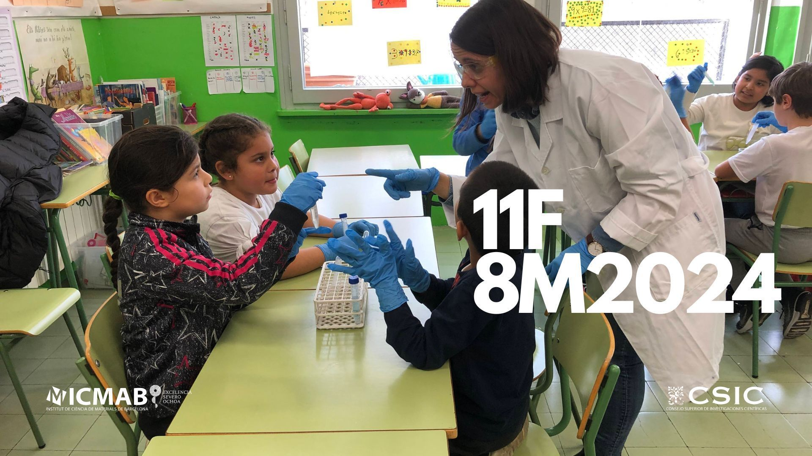
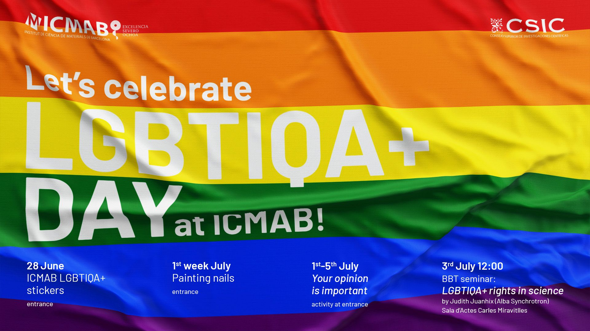
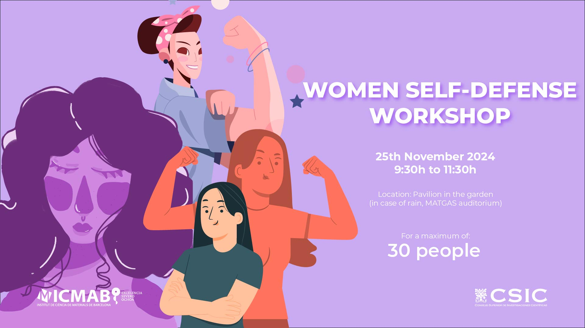
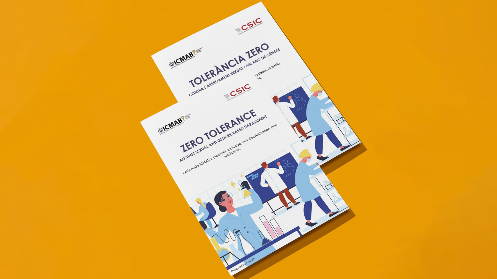

Gender equality and diversity
EQUALITY ACTIVITIES AT ICMAB DURING 2024
The ICMAB's Equality Commission was reconstituted in 2023, changing its name to the Gender Equality and Inclusion Commission (CIGiD), with the aim of making visible the intention of also working for the inclusion of minority groups. Furthermore, its rules of procedure were approved by the Board of the Institute on 21 September 2023. The CIGiD is made up of representatives from all the scientific departments and all the groups, as well as some key people in the area of equality work (head of risk prevention, head of talent recruitment and retention, and representative of communication and dissemination).
The presidency of the CIGiD is held by the deputy director responsible for
equality, currently Lourdes Fàbrega (
Two contacts have been made available for CIGiD:
This email address is being protected from spambots. You need JavaScript enabled to view it. ->distribution list to all CIGiD membersThis email address is being protected from spambots. You need JavaScript enabled to view it. -> contact mail
The equality activities developed in the
ICMAB throughout 2024 were:
The equality activities developed in the ICMAB throughout 2024 were:

1. Elaboration of the Action Plan for Equality and Inclusion at ICMAB 2024-28 (PLA3I).
Between April and October, the CIGiD proceeded to draw up the PLA3I with the following steps:
- Carrying out a diagnosis of equality in the centre, by means of:
- Analysis of all available data on the centre's staff (gender, origin, tasks, level, types of contract, working conditions, promotion), as well as data on scientific productivity, disaggregated by gender (articles, attraction of resources, technology transfer, awards), and internal institutional culture (% of women in Management, Board, Commissions, among staff representatives and among heads of Dept, presence of women in thesis tribunals, ...).
- Survey of all staff at the centre.
- Interviews with several selected people.
- Discussion of the diagnosis and definition of the work axes and their objectives.
- Concretisation of 81 actions for the Plan.
- Establishment of mechanisms for the implementation and monitoring of the Plan.

2. Programme to commemorate 11F and 8M, with the following activities:
- Posters with names of women scientists and a short biography of them were installed in many spaces and rooms of the centre.
- Put a face to us. A periodic table with photos of all the women working at the ICMAB was created and installed at the entrance to the centre. The activity consisted of putting names to each image. From 12 to 19 February.
- Debate meeting ‘Women in science: inspiring stories that break
barriers’, with Nora Ventosa (Research Professor at ICMAB and Director
of nanomol- TECNIO), MªJosé Esplandiu (Research Scientist at
ICN2), Judith Oró (Microscopy Service Technician at ICMAB) and Isabel
Guerrero (postdoctoral researcher, ICMAB).
Moderator: Rosario Núñez (research scientist, ICMAB). 22 February. - Gender equality in practice: keys to success, with Maribel Cárdenas
(Director of Equality Policies, Santa Coloma de Gramenet City Council) and
Lidia Arroyo Prieto: Researcher in the Gender and ICT group (Internet
Interdisciplinary Institute- Universitat Oberta de Catalunya, UOC) and
associate lecturer in the Department of Social Psychology,
UAB.
Moderator: Ana López Periago (Senior Scientist, ICMAB). 26th February - Coffee with Sonia Antoranz (Oxford University), multifaceted researcher, author and mentor. Meeting aimed at young ICMAB researchers. 4th March
- Seminar ‘Women astronomers through history’, by Montse Ribell (Sabadell Astronomical Association).

3. Programme to commemorate 28J:
- The gay pride flag was hung on the main façade of the ICMAB.
- Stickers with the ICMAB logo in the colours of the rainbow were distributed.
- ‘Paint your nails’. Nail painting was offered at the entrance of ICMAB. 1-5 July.
- Your opinion is important. Activity for people at ICMAB to express their opinion on various questions related to LGTBIQ* and inclusion. ICMAB entrance, 1-5 July.
- Seminar Breaking Barriers Together: ‘Gender in sight, politics in play, science in trouble’, by Judith Juanhuix (ALBA Synchrotron). 3 July. This seminar inaugurated the Breaking Barriers Together cycle, with which we aim to hold events with people who stand out for their struggle for equality and inclusion.

4. Programme to commemorate 25N:
- Elaboration and distribution of a manifesto against violence against women.
- Self-defence workshop for women. 25th November

5. Awareness-raising campaign against sexual and gender-based harassment (November-December).
- Printing and distribution of the CSIC leaflet (in Spanish and English).
- Preparation, printing and distribution of a leaflet including basic information on the CSIC protocol, plus the channels for reporting established within the ICMAB and other resources from different administrations (in Catalan and English).
6. ICMAB's participation in programmes or activities organised by other entities:
- Science by Women, of the Women for Africa Foundation: since 2021 the institute has participated in this programme, hosting an African scientist every year.
- Working Group on Equity, Diversity and Inclusion of the SOMMa Alliance:
Lourdes Fàbrega has been coordinating it since November 2023.
Among the 2024 activities are:
- Course Unconscious Gender Biases in Research and its Evaluation, by Capitolina Díaz, 14 June; ICMAB was co-organiser.
- Manifesto for the equal recognition of women in research December 2024; ICMAB participated in its drafting.
- Meeting of CSIC Equality Committees (October, Seville): Lourdes Fàbrega attended.
7. Training on equality and harassment.
The ICMAB disseminates the courses on equality organised by institutions and entities, and staff, and specifically members of the CIGiD, are encouraged to receive training in this area. Throughout 2024, several members of the CIGiD have taken courses:
- Basic Course on Equality (Training Office): Maribel Contreras, Guillem Vargas, Roberta Ceravola
- Gender Equality in Research Projects Course (Training Office): Rosario Núñez
- Course on Unconscious Gender Biases in Research and its Evaluation (organised by SOMMa, June): Dolors Grillo, Lourdes Fàbrega
- Course on the new CSIC protocol against sexual and gender-based harassment (Gabinete de Formación, June): Roberta Ceravola, Lourdes Fàbrega
- Course on Gender Equality in Science (organised by the ICMM and the Delegation of the CSIC in Catalonia, October): Mar Tristany, Lourdes Fàbrega, Arantxa González
- Training on Gender Mainstreaming in Science (organised by the Generalitat de Catalunya, November): Dolors Grillo, Lourdes Fàbrega, Anna Laromaine, Arantxa González
8. Visibility and participation of ICMAB scientists in outreach activities
- Dr. Paula Mayorga was awarded the L'Oréal for Women in Science 2024 Prize.
- Prof. Teresa Puig participated in a Discovery Workshop with schoolchildren, in which the Encyclopaedia of Women in STEAM was presented, on the International Day of Girls in ICT.
- Dr. Lourdes Fàbrega participated in the 8M commemorative event at the Institute of Chemical Technologies (Valencia).
- Every year, several women scientists give talks and dissemination activities in educational centres, especially around 11F.